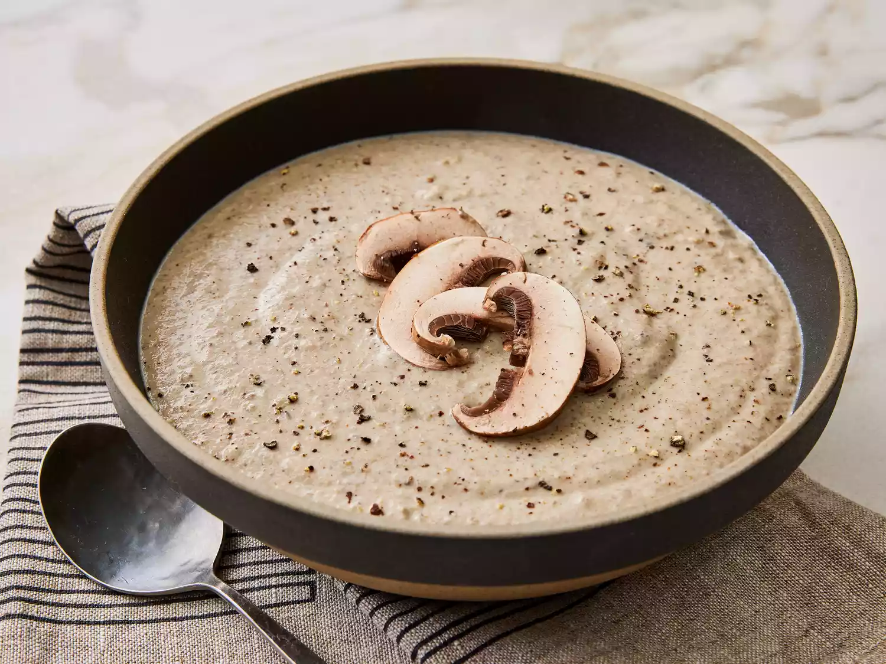

Mushroom Soup

Ingredients
- 1 pound of fresh mushrooms, sliced
- 1 medium onion, chopped
- 2 cloves of garlic, minced
- 4 cups of vegetable broth
- 1 cup of heavy cream
- 2 tablespoons of olive oil
- Salt and pepper to taste
- Fresh parsley for garnish
Instructions
- In a large pot, heat 2 tablespoons of olive oil over medium heat.
- Add the chopped onion and sauté until translucent.
- Add the minced garlic and cook for an additional 1 minute.
- Stir in the sliced mushrooms and cook until they are soft, about 5-7 minutes.
- Pour in the vegetable broth and bring to a simmer.
- Reduce the heat and stir in the heavy cream, cooking until heated through.
- Season with salt and pepper to taste.
- Serve hot, garnished with fresh parsley.